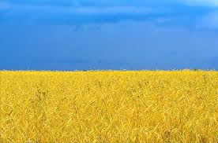
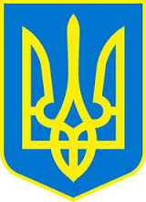

<DOCTYPE>
<head>
<title> KP.OPUS </title>
</head>

<body>

<b><h1> <u> COUTRY </u>  </h1> </b>
<p> UKRAINE </p>

<h2><b><u> CAPITAL </u></b> </h2>

<b><p> KIEV <b/> </p>


<h3> <b><u> MESTA OTDUXA </u></h3></b>

<p><b> Bopoxta,Bykovel,Dragobrat </b></p>


<h4> <b> <u> KOL.LfiDEI </u> </b> </h4>


<p> <b> <u> 45m.488t.512chelovek </u> </b> </p>


<h5> <b> <u>  <i> BUZHACHI OCOBI </i> </u>  </b> </h5>

<P> <u> GRYSHEVSCII I IVAN FRANCO </u> </p>






<a href="https://uk.wikipedia.org/wiki/%D0%A3%D0%BA%D1%80%D0%B0%D1%97%D0%BD%D0%B0">https://uk,wikipedia.org/wiki/” –¿ØÕ¿ </a>


<body/>


